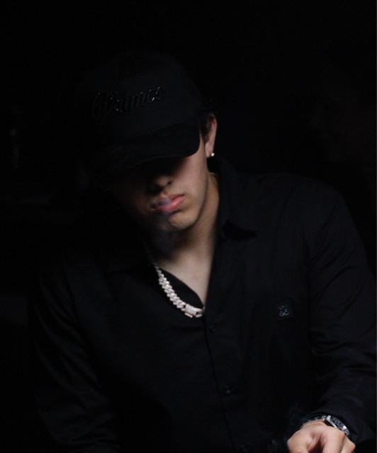
Talento Música · Cine
Alonso
Ortiz
Canta corridos y regional mexicano, y protagoniza las películas que el público ve completas en YouTube. Dieciocho películas, una canción con la luna y una comunidad que no deja de crecer.
Retrato
Alonso en números
- Vistas de sus películas en YouTube
- 180M
- Platicando con la Luna en YouTube
- 31.9M
- Seguidores en TikTok
- 1.8M
- Oyentes mensuales en Spotify
- 518K
- Seguidores en Instagram
- 302K
- Suscriptores en YouTube
- 171K
Cifras públicas de YouTube, Spotify, TikTok e Instagram, octubre de 2026.
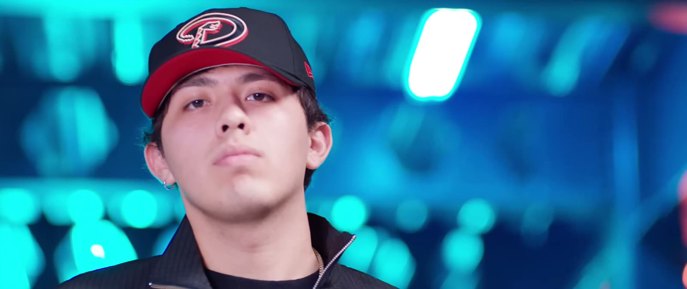
A La música Más de 29 lanzamientos desde 2020: corridos, románticas y colaboraciones con Ysrael Barajas, Gabriel Ssoe y Virlan García.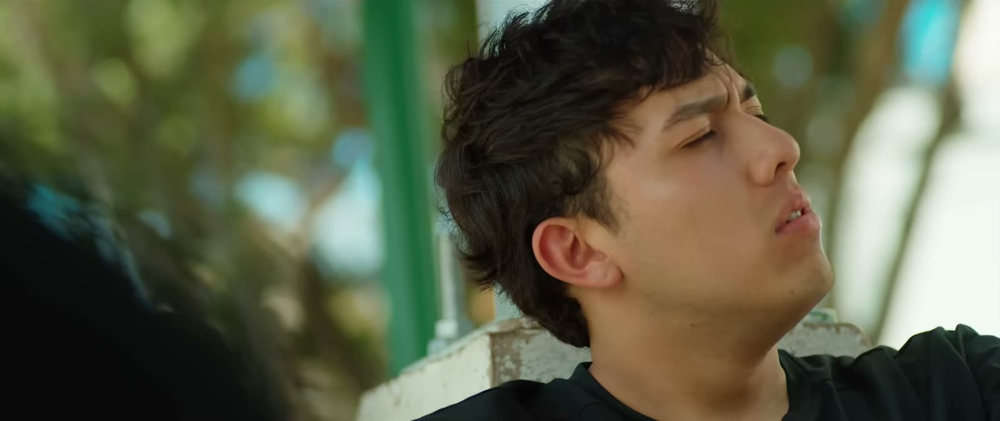
B El cine Dieciocho películas completas desde 2022, de Los Envidiosos a El sueño se cumplió, su película más personal.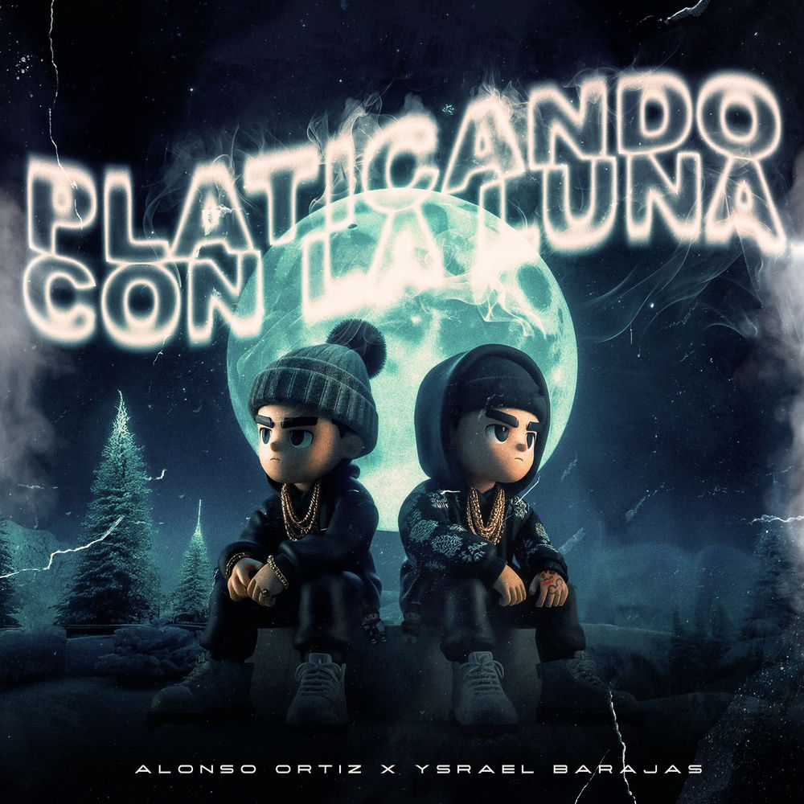
Su canción más escuchada
Platicando
con la Luna
Alonso Ortiz × Ysrael Barajas · 2025
31.9M
reproducciones en YouTube entre el video con letra y el audio oficial
Ver el video con letraA Música
Más canciones
- 01RSVideo oficial · 20234.7M
- 02Hola Mi AmorVideo oficial · 20251.9M
- 03Pa’ No Creer en el Amor ft. Gabriel SsoeVideo oficial · 2025375K
- 04BellaVideo con letra · 2026327K
- 05PAPARAZZISVideo con letra · 2026256K
- 06Alter EgoVideo oficial · 2026192K
Vistas en YouTube.
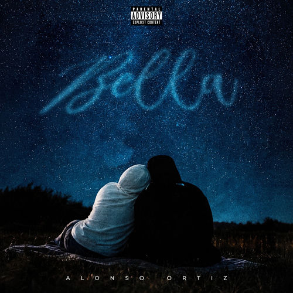
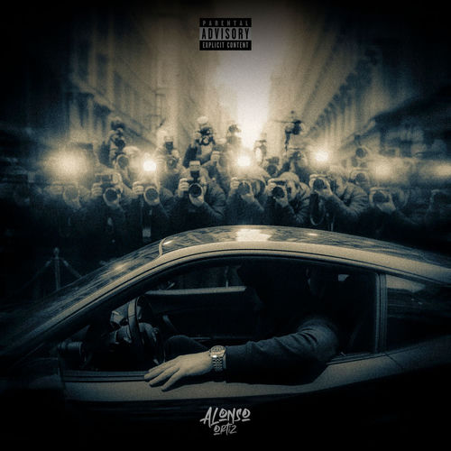
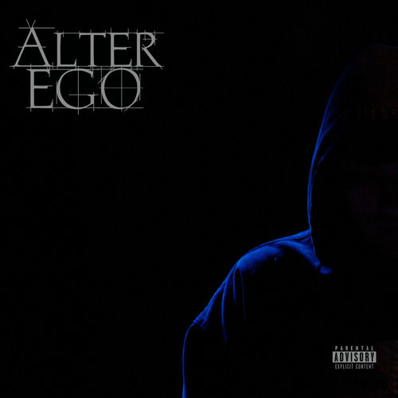
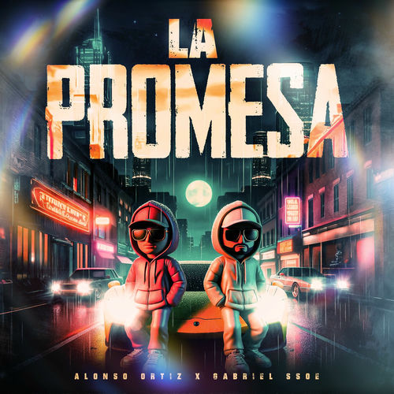
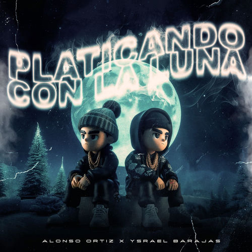
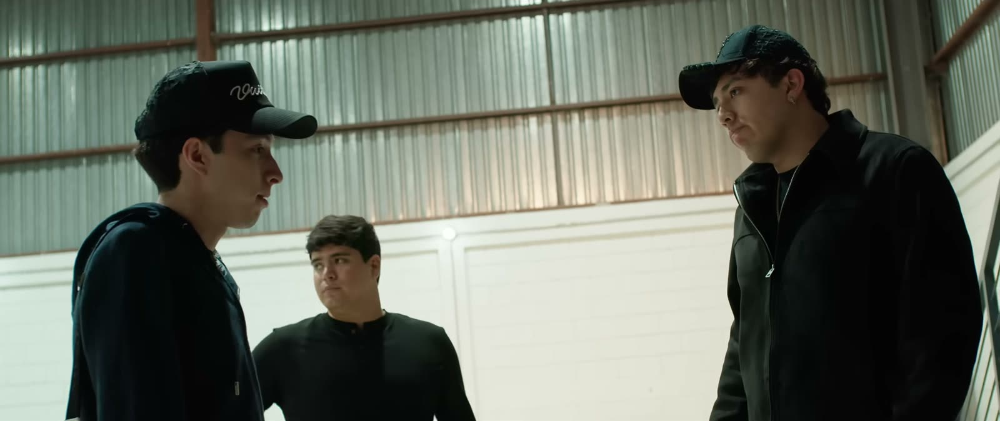
B Cine · Estreno 2026
El sueño
se cumplió
Una película de Alonso Ortiz. Con Ysrael Barajas, Memo Piña, Marivic Cárdenas y Crecer Germán.
Ortiz es un joven cansado de sentirse estancado y de decepcionar a quienes lo rodean. ¿Hasta dónde llegarías para cumplir tu sueño?
- 8M vistas en siete semanas
- 97 minutos
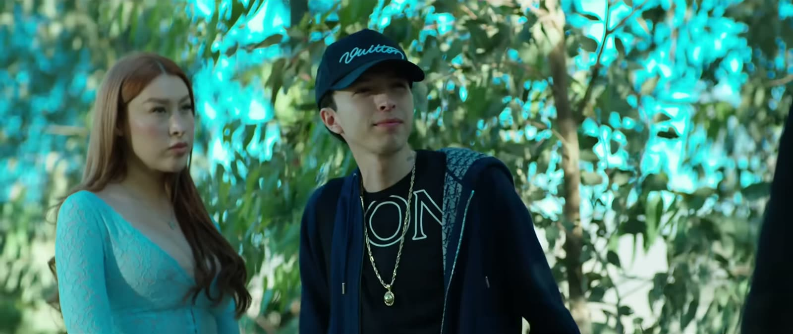
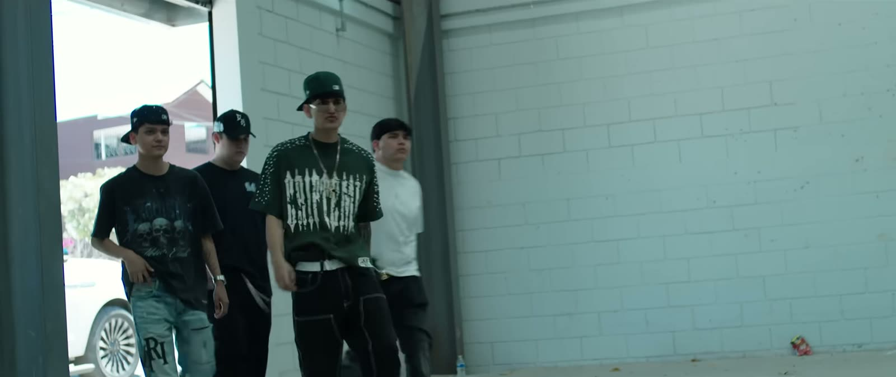
Filmografía
18 películas, 180 millones de vistas
Todas completas y gratis en YouTube. Ordenadas de la más reciente a la primera.
- 2026El sueño se cumplió97 min8.0M
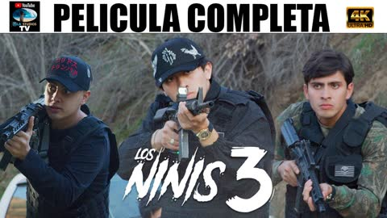
2025Los Ninis 397 min6.5M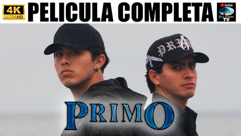
2025Primo115 min7.0M- 2025La Promesa92 min4.6M
- 2024Extssy Model103 min8.8M
- 2024Más altas que bajadas110 min9.4M
- 2024El Problema114 min21.7M
- 2024Su padrino es el Papá de los Pollitos104 min6.4M
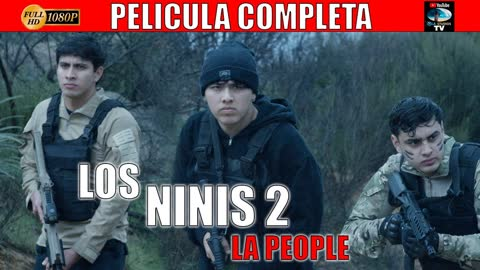
2024Los Ninis 2: La People99 min11.6M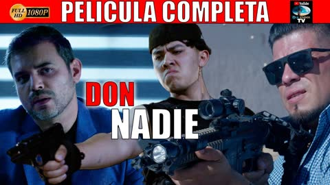
2023Don Nadie116 min20.7M- 2023El Plebe del Camaro91 min8.7M
- 2023Los Ninis87 min15.5M
- 2023El Corrido del 1093 min8.5M
- 2023Brindis Mortal97 min5.4M
- 2022Mafia Nueva Sinaloense92 min8.7M
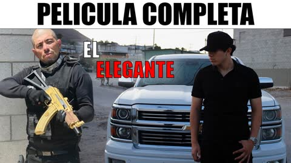
2022El Elegante119 min10.6M- 2022Gente de Accionar121 min9.3M
- 2022Los Envidiosos81 min8.8M
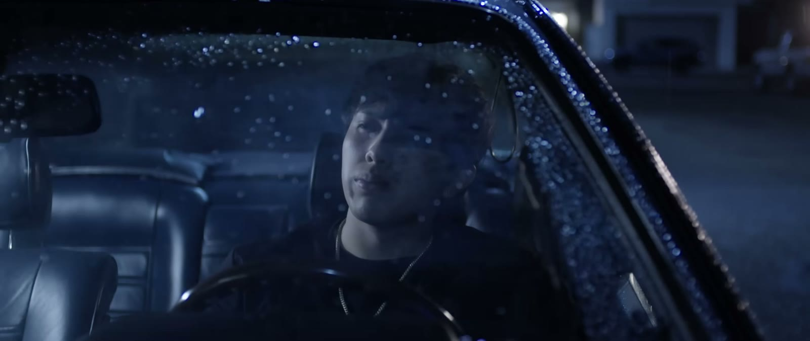
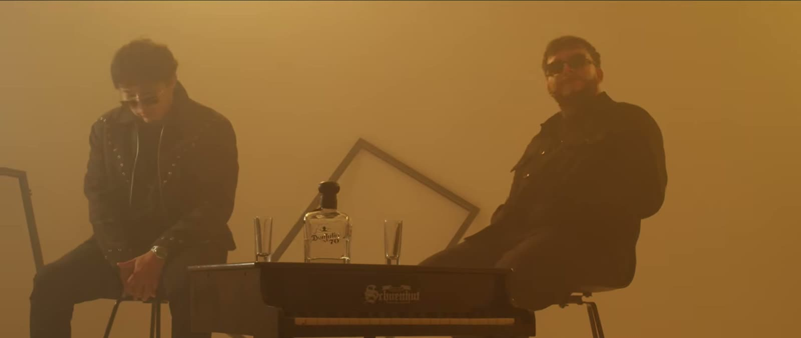
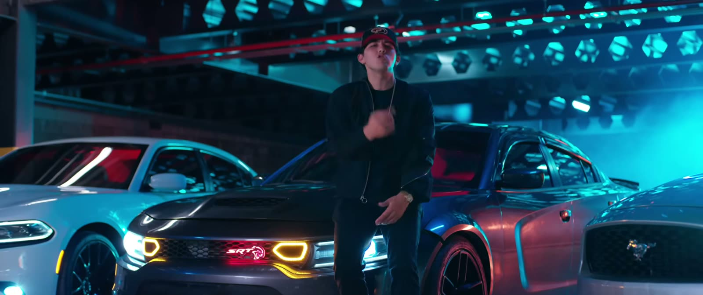
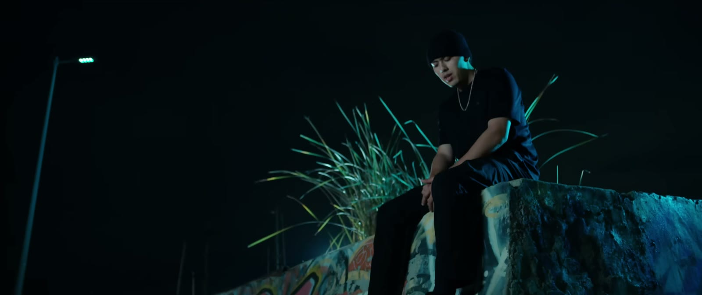
Redes
Dónde seguirlo
Booking y colaboraciones
¿Alonso en tu próximo proyecto?
Shows, colaboraciones musicales, campañas y cine. La representación es a través de LunáticosTv.
Trabaja con Alonso Ortiz